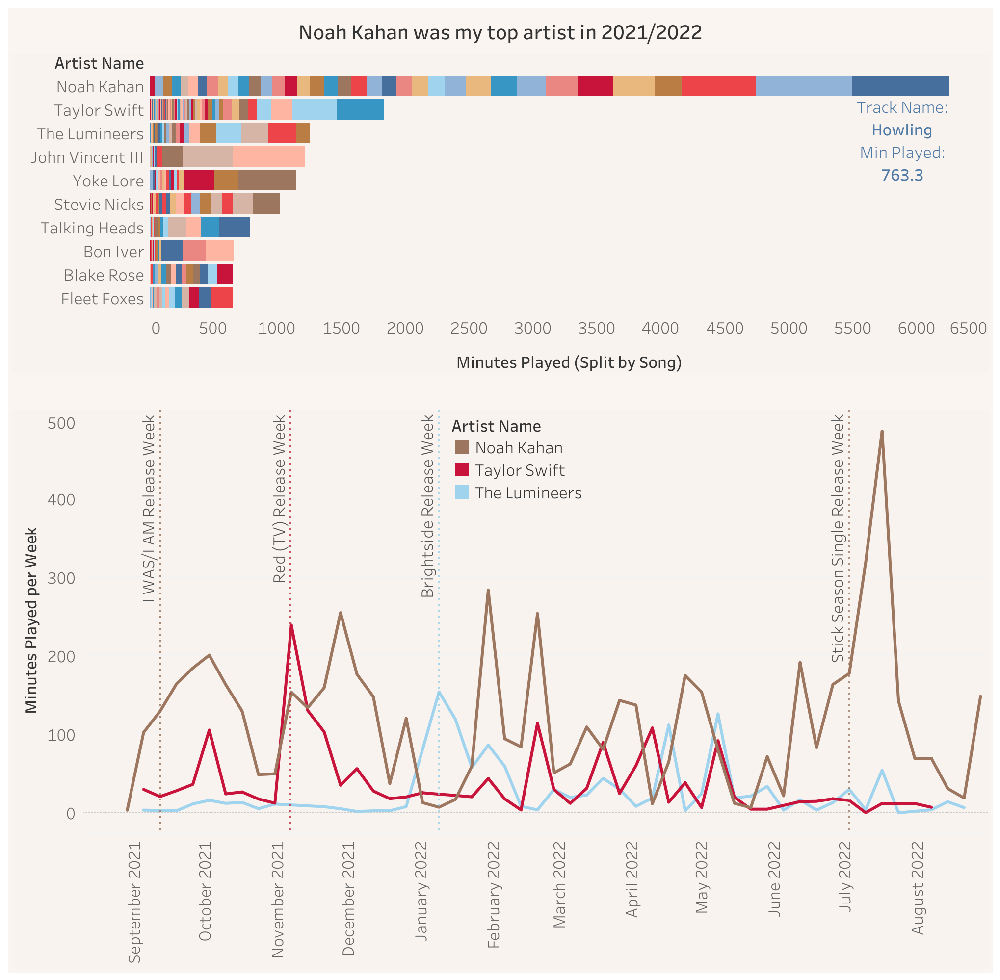

Maps and Data Viz – Page in progress, so come back soon!
Maps and Visualizations
Chloropleth map of Iowa showing the counts of concentrated animal feeding operations (CAFO) by county. Created in ArcGIS Pro.
Three possible views within a Shiny Application for users to assess the results of their weighted and sequential decision-making regarding various treatment options for kidney disease. Created with R, laid out with Inkscape
Map of the Santa Barbara Channel showing locations where habitat is likely suitable for kelp aquaculture. Created with R and Inkscape.

Dashboard of Spotify listening history displaying a bar chart of Elke’s top 10 artists by minutes played split by song, and a timeseries of Elke’s top 3 artist minutes played throughout the year. Created with Tableau.
document.querySelectorAll('.clickable-image').forEach(function(image) { image.onclick=function() {const modal =document.getElementById('imageModal');const modalImage =document.getElementById('modalImage');const modalCaption =document.getElementById('modalCaption');const initialCaption =document.querySelector('.initially-hidden'); initialCaption.style.display='none';// Hide the caption on the main page modal.style.display='block'; modalImage.src=this.getAttribute('data-src');// Set the source of the enlarged image modalCaption.textContent=this.parentElement.querySelector('figcaption').textContent;// Set the caption text };});